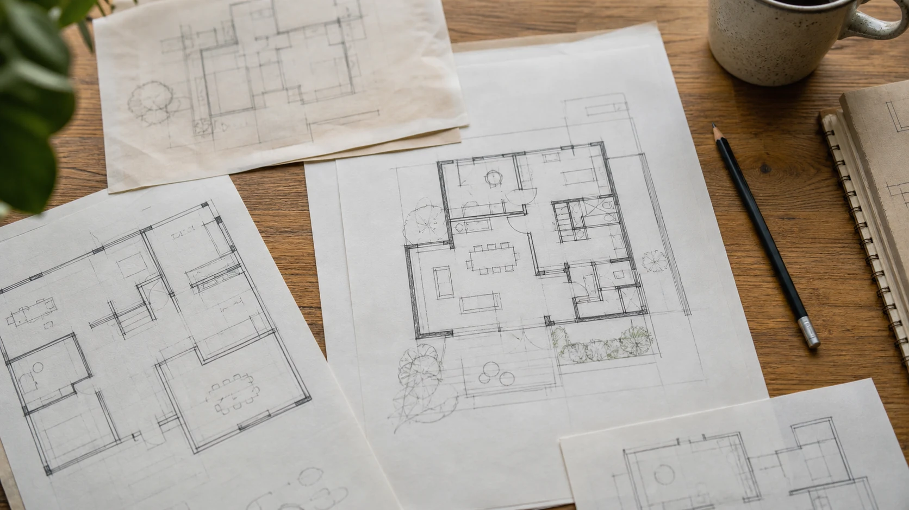
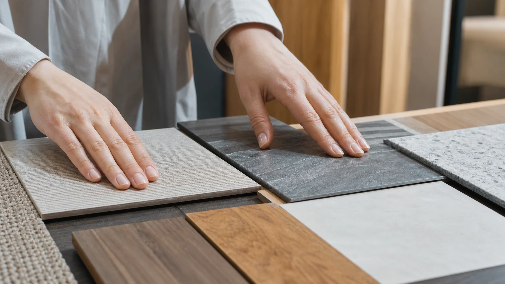

生成AIは「リフォーム案を決めてもらう道具」ではなく、家族の困りごとや希望を言葉にし、比較案や質問リストへ整える道具として使うと役立ちます。この記事では、①困りごとの箇条書き、②間取り・家具配置の比較案、③設備候補・見積もりの質問、④家族会議用の一枚、という4つの使い方を、AIへの入力例と得られる結果に分けて紹介します。
1. AIは住まいの正解を決める道具ではない
生成AIは、文章や画像を作り出したり、質問に答えたりする技術ですが、住まいづくりにおいては「正解を教えてくれる存在」ではなく、「考えを整理する手伝いをしてくれる存在」として捉えるのが適切です。
たとえば「うちのリビングをどうリフォームすればいいですか」とAIに聞いても、あなたの家の構造、日当たり、家族構成、予算といった具体的な条件を踏まえた答えは返ってきません。一方で、「家族4人で、週末に集まりやすいリビングにしたい。今の悩みは収納が少ないこと」といった具体的な情報を伝えれば、考えを整理するためのたたき台を一緒に作ることができます。
AIへ入力する際は、氏名・住所などの個人情報や、図面・見積書に含まれる機密情報を除き、利用するサービスの規約とデータの取扱いを確認してください。
2. 家族の困りごとを箇条書きにする
AIへの入力例：「朝は洗面所が混む」「買い置きの置き場がない」「夜勤の家族が昼に眠る」など、家族ごとの困りごとと起きる時間帯を、思いつくまま書きます。続けて「人別・場所別・時間帯別に分類し、確認が必要な点も挙げて」と頼みます。
得られる結果：ばらばらだった不満を整理した一覧と、家族へ追加で聞く質問です。AIが付けた優先順位は仮のものなので、誰の困りごとを先に扱うかは家族で決めます。

3. イメージ画像に起こして話し合う
AIへの入力例：部屋のおおよその広さ、窓・ドア・動かせない設備の位置、家族人数、置きたい家具、確保したい通路幅などを、住所や氏名を除いて書きます。「収納重視案と動線重視案を、長所・短所付きで比較して」と頼みます。
得られる結果：施工会社へ希望を伝えるための複数案と比較観点です。必要に応じてイメージ画像に起こし、家族で見ながら希望を話し合うこともできます。生成された配置は寸法・構造・避難経路・法令への適合を保証しないため、図面化や採用判断は建築士・施工会社に確認します。
4. 設備候補・見積もりを施工会社への質問に変える
AIへの入力例：設備候補の特徴や、見積書の項目名・数量・単位を、会社名・担当者名・住所などを削除して入力します。「性能、保証、工事範囲、追加費用、維持費の観点で、施工会社へ聞く質問にして」と頼みます。
得られる結果：「撤去・処分費は含まれるか」「保証の対象と期間は何か」「追加工事が発生する条件は何か」といった質問リストです。AIは現場条件や契約内容を確認できないため、製品の適合、施工範囲、金額の妥当性と最終費用は施工会社へ確認します。
5. 家族会議の論点を一枚にまとめる
AIへの入力例：家族それぞれの希望、譲れない条件、予算の上限、決めていない点、施工会社へ確認する点を入力し、「A4一枚を想定して、合意済み・意見が分かれる・専門家確認・次回決めることの4欄に整理して」と頼みます。
得られる結果：家族会議で読み合わせられる論点メモです。AIに結論を決めさせず、誤解や抜けがないかを家族全員で直してから、施工会社との打ち合わせ資料として使います。
6. 最終確認は専門家と行う
ここまで紹介した使い方に共通するのは、AIが担うのは「整理」の部分であり、「決定」の部分ではないということです。AIの回答には、誤りや古い情報、個別条件の見落としが含まれる可能性があります。制度・補助金・製品仕様は所管官庁やメーカーなどの公式情報で確認し、図面や法規は建築士、施工方法や最終見積もりは施工事業者など、項目に応じた専門家による現地確認と判断が必要です。
生成AIをうまく活用すれば、専門家との打ち合わせをより実りあるものにできますが、それはあくまで「準備」としての役割です。最終的な判断は、必ず専門家とともに行ってください。
見積書の内容やリフォーム事業者について第三者に相談したい場合は、住まいるダイヤルなどの公的相談窓口も利用できます。
